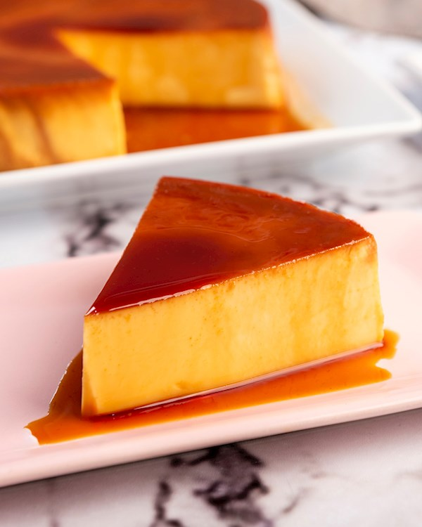

Bienvenidos a La Dulceria de Nelly
En nuestra dulceria elaboramos postres artesanales con ingredientes frescos y recetas tradicionales. Creamos tortas, cupcakes y dulces para toda las ocasiones y momentos especiales.
La Dulcería de Nelly es un emprendimiento familiar de repostería artesanal dedicado a crear dulces y postres únicos con sabores caseros y presentaciones irresistibles. Inspirada en recetas tradicionales y técnicas creativas, Nelly produce tortas personalizadas, cupcakes, galletas y postres individuales pensados para endulzar celebraciones y momentos especiales. La filosofía del negocio se basa en la calidad de los ingredientes, el cariño en cada preparación y la atención personalizada a los clientes. Cada producto se elabora de forma artesanal, destacándose por su frescura, sabor auténtico y estética cuidada. Además de ofrecer productos de alta calidad, La Dulcería de Nelly busca conectar con la comunidad, compartiendo recetas, consejos de repostería y experiencias que inspiran a disfrutar la cocina creativa y hogareña.
En la Dulceria de Nelly creemos que un buen postre no solo se disfruta en el paladar, sino tambien con el corazon. Por esta razon creamos momentos de felicidad y recuerdos dulces para sus clientes.

Venezuela, nuestra fuente de inspiracion
La Dulcería de Nelly nace inspirada en Venezuela, una tierra llena de colores, sabores y tradiciones que se transmiten de generación en generación. De allí provienen nuestras raíces, nuestras recetas y el amor por la repostería casera hecha con paciencia y dedicación. Venezuela es sinónimo de familia, de reuniones alrededor de la mesa y de dulces preparados para compartir. Cada postre que elaboramos lleva un pedacito de esa historia, recordando los sabores de la infancia, las celebraciones y el calor del hogar. Nuestra inspiración viene de esas recetas tradicionales, del cariño con el que se cocina y del deseo de mantener viva nuestra cultura a través de la repostería. Aunque el camino nos haya llevado a nuevos lugares, Venezuela siempre está presente en cada creación, siendo el corazón y el alma de La Dulcería de Nelly.